Previdenza complementare e TFR: cosa sapere sulla scelta del neoassunto
Il tema del destino del TFR verso la previdenza complementare torna d'attualità per via di ipotesi di riforma in discussione. Prima di parlarne come di diritto vigente, conviene di…

Licenziamento per giusta causa: la reazione a una provocazione può renderlo illegittimo
Quando un comportamento sanzionabile nasce come reazione esasperata a provocazioni o molestie subite sul lavoro, la giusta causa di licenziamento vacilla. La giurisprudenza di legi…
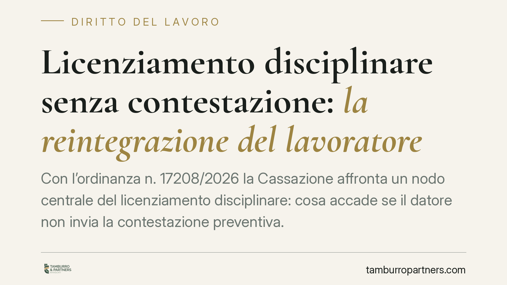
Licenziamento disciplinare senza contestazione: la reintegrazione del lavoratore
Con l'ordinanza n. 17208/2026 la Cassazione affronta un nodo centrale del licenziamento disciplinare: cosa accade se il datore non invia la contestazione preventiva. La Corte quali…
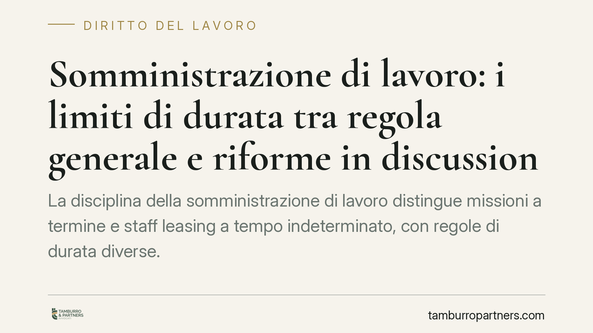
Somministrazione di lavoro: i limiti di durata tra regola generale e riforme in discussione
La disciplina della somministrazione di lavoro distingue missioni a termine e staff leasing a tempo indeterminato, con regole di durata diverse. Circolano ipotesi di riforma che mo…
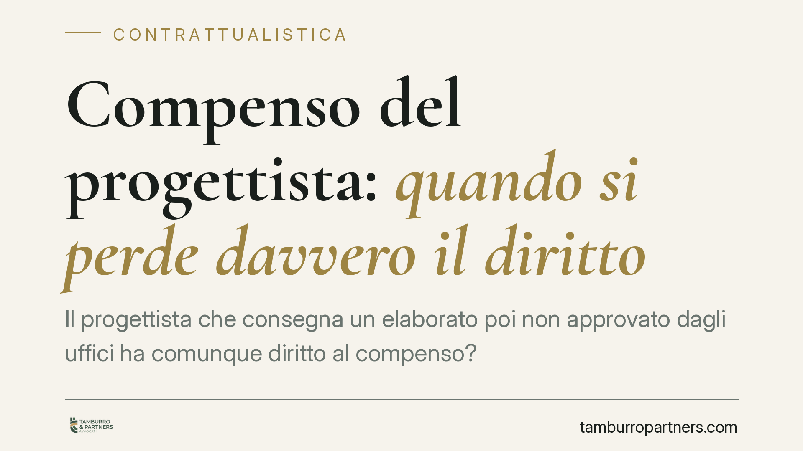
Compenso del progettista: quando si perde davvero il diritto
Il progettista che consegna un elaborato poi non approvato dagli uffici ha comunque diritto al compenso? La giurisprudenza distingue nettamente tra progetto tecnicamente irrealizza…
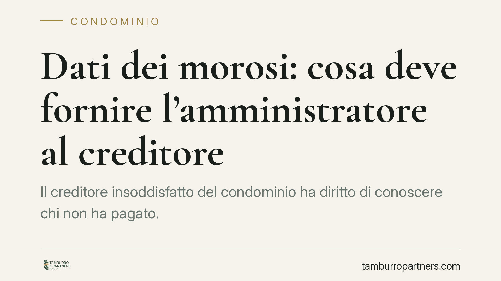
Dati dei morosi: cosa deve fornire l'amministratore al creditore
Il creditore insoddisfatto del condominio ha diritto di conoscere chi non ha pagato. Una recente pronuncia di merito ribadisce che l'amministratore deve fornire un elenco completo …
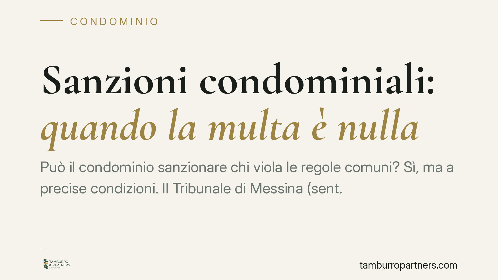
Sanzioni condominiali: quando la multa è nulla
Può il condominio sanzionare chi viola le regole comuni? Sì, ma a precise condizioni. Il Tribunale di Messina (sent. 940/2026) ha dichiarato nulla la delibera che introduce multe s…
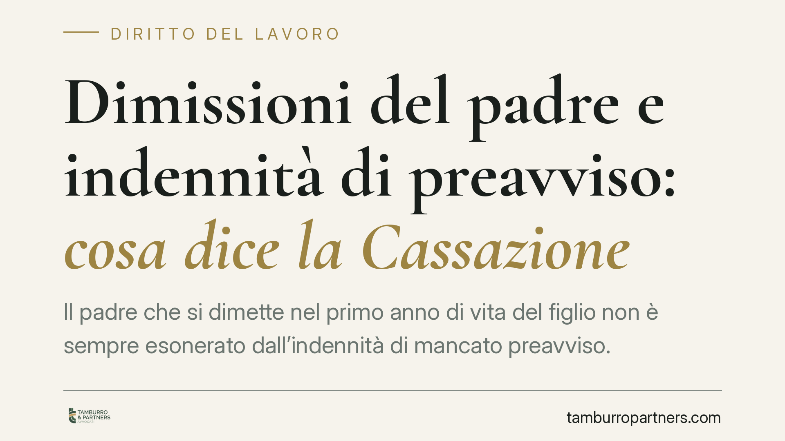
Dimissioni del padre e indennità di preavviso: cosa dice la Cassazione
Il padre che si dimette nel primo anno di vita del figlio non è sempre esonerato dall'indennità di mancato preavviso. Secondo un recente orientamento della Cassazione, l'esonero pr…
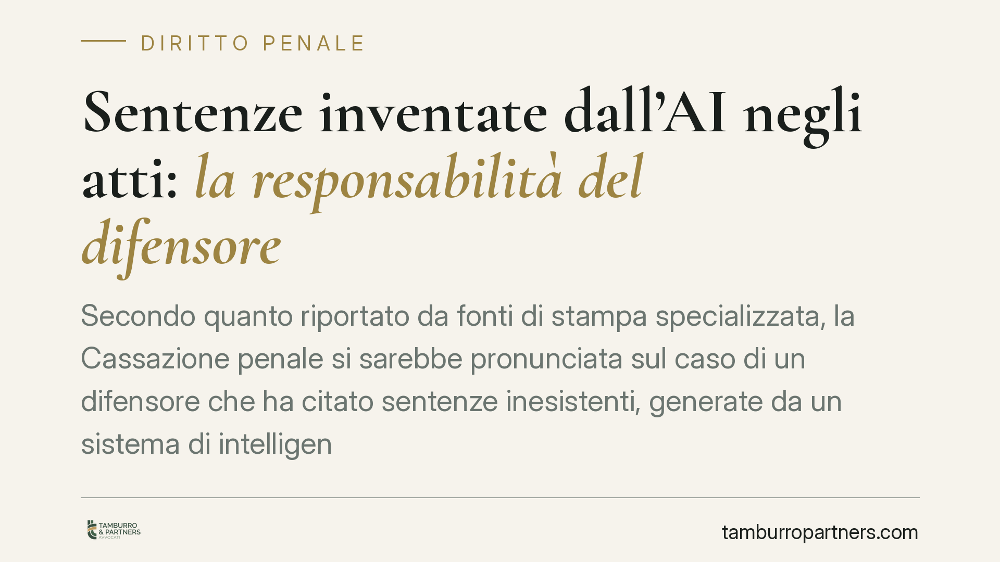
Sentenze inventate dall'AI negli atti: la responsabilità del difensore
Secondo quanto riportato da fonti di stampa specializzata, la Cassazione penale si sarebbe pronunciata sul caso di un difensore che ha citato sentenze inesistenti, generate da un s…
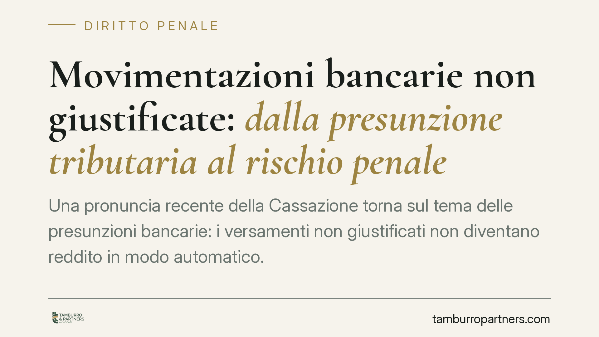
Movimentazioni bancarie non giustificate: dalla presunzione tributaria al rischio penale
Una pronuncia recente della Cassazione torna sul tema delle presunzioni bancarie: i versamenti non giustificati non diventano reddito in modo automatico. Il contribuente può provar…
Mutuo cointestato e proprietà esclusiva: niente regresso se il debito era nell'interesse di un solo coniuge
Chi paga un mutuo cointestato ha sempre diritto a farsi rimborsare la metà dall'altro intestatario? Non necessariamente. Il Tribunale di Palermo ha negato l'azione di regresso al c…
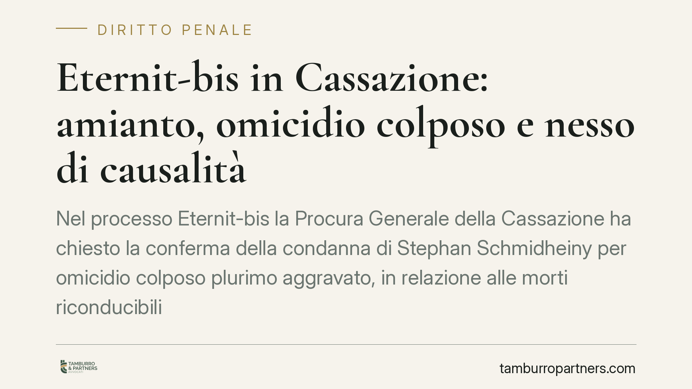
Eternit-bis in Cassazione: amianto, omicidio colposo e nesso di causalità
Nel processo Eternit-bis la Procura Generale della Cassazione ha chiesto la conferma della condanna di Stephan Schmidheiny per omicidio colposo plurimo aggravato, in relazione alle…
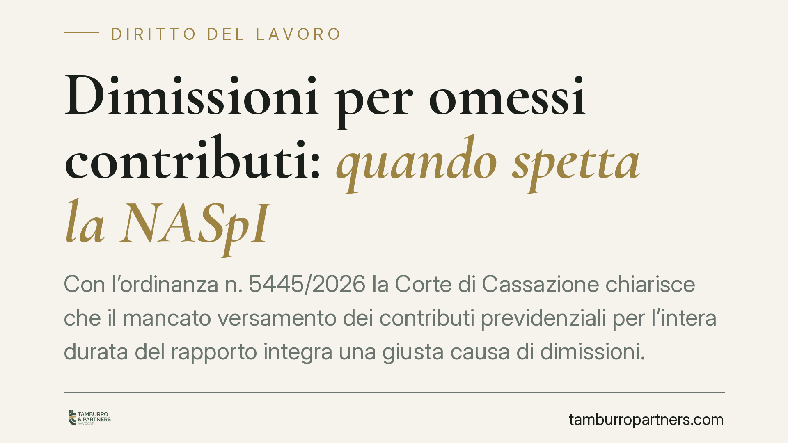
Dimissioni per omessi contributi: quando spetta la NASpI
Con l'ordinanza n. 5445/2026 la Corte di Cassazione chiarisce che il mancato versamento dei contributi previdenziali per l'intera durata del rapporto integra una giusta causa di di…
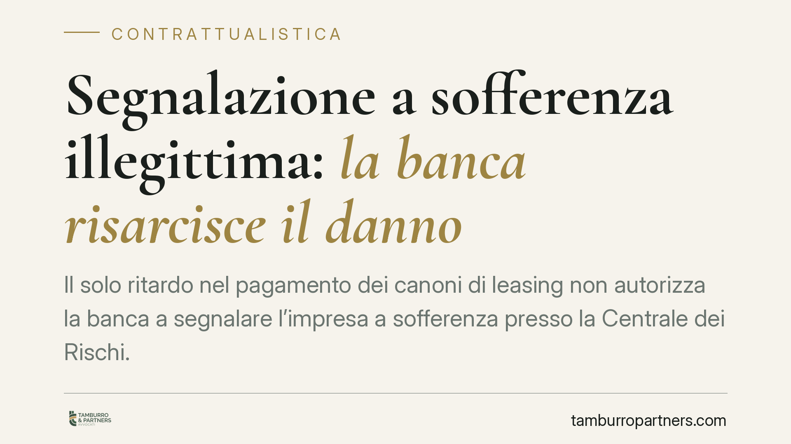
Segnalazione a sofferenza illegittima: la banca risarcisce il danno
Il solo ritardo nel pagamento dei canoni di leasing non autorizza la banca a segnalare l'impresa a sofferenza presso la Centrale dei Rischi. Secondo una recente ordinanza della Cas…
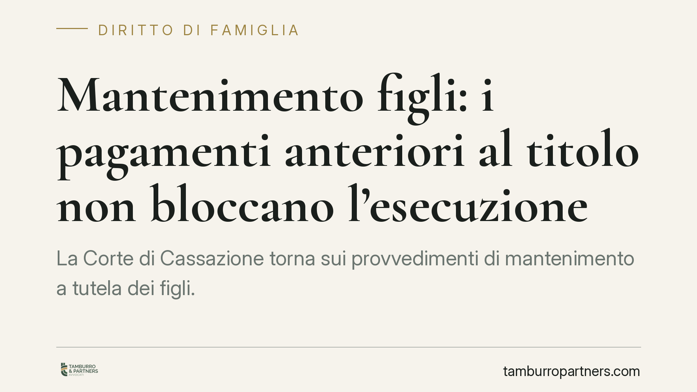
Mantenimento figli: i pagamenti anteriori al titolo non bloccano l'esecuzione
La Corte di Cassazione torna sui provvedimenti di mantenimento a tutela dei figli. In sede di opposizione all'esecuzione non rilevano i versamenti effettuati prima del titolo, ma s…
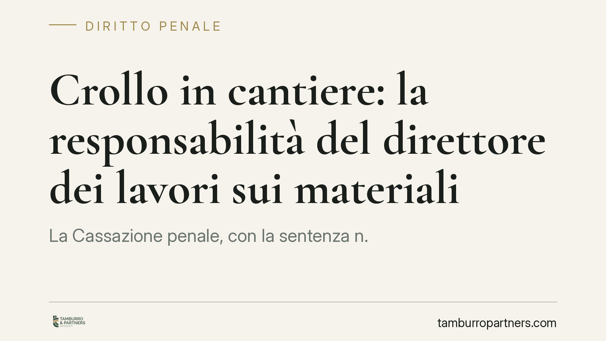
Crollo in cantiere: la responsabilità del direttore dei lavori sui materiali
La Cassazione penale, con la sentenza n. 9518/2025, conferma la condanna per omicidio colposo del direttore dei lavori e del direttore tecnico di cantiere dopo il crollo di una par…
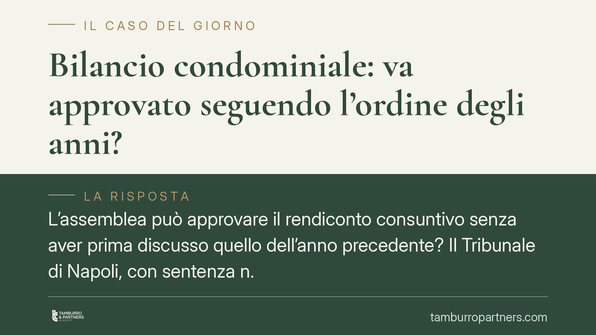
Bilancio condominiale: va approvato seguendo l'ordine degli anni?
L'assemblea può approvare il rendiconto consuntivo senza aver prima discusso quello dell'anno precedente? Il Tribunale di Napoli, con sentenza n. 5036/2025, risponde di sì, salvo d…
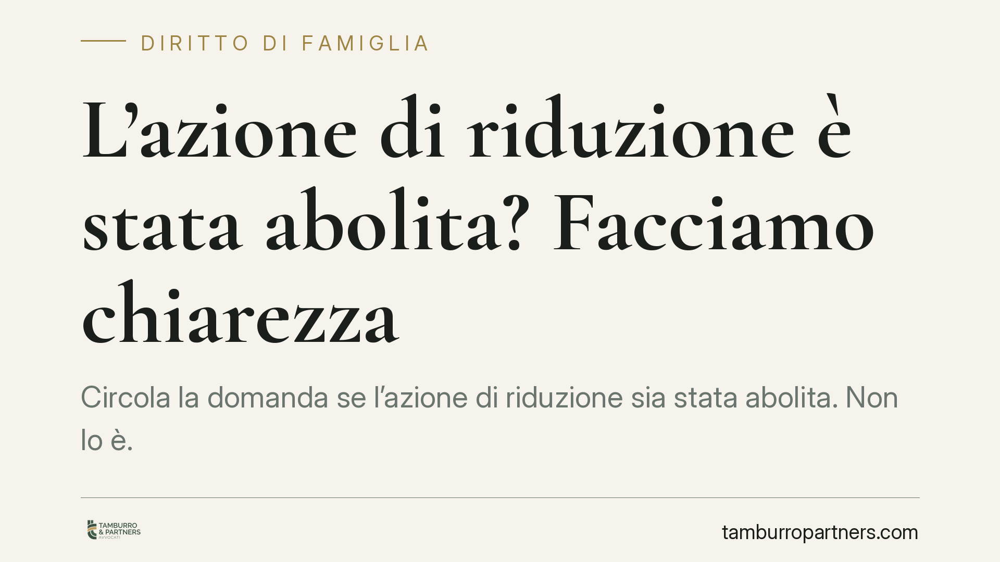
L'azione di riduzione è stata abolita? Facciamo chiarezza
Circola la domanda se l'azione di riduzione sia stata abolita. Non lo è. La tutela dei legittimari resta un pilastro del diritto successorio, ma dal 2005 il recupero dei beni donat…
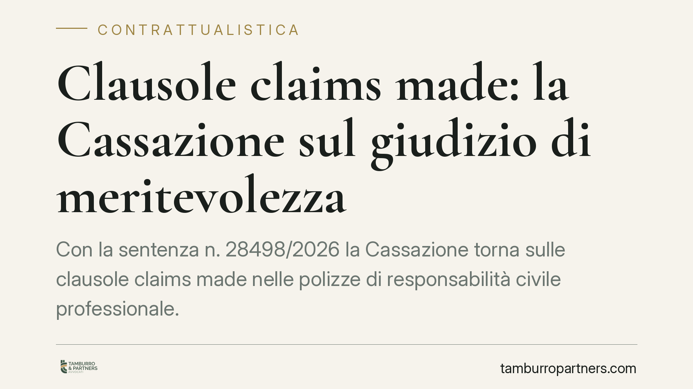
Clausole claims made: la Cassazione sul giudizio di meritevolezza
Con la sentenza n. 28498/2026 la Cassazione torna sulle clausole claims made nelle polizze di responsabilità civile professionale. Il giudice non deve più verificarne la meritevole…
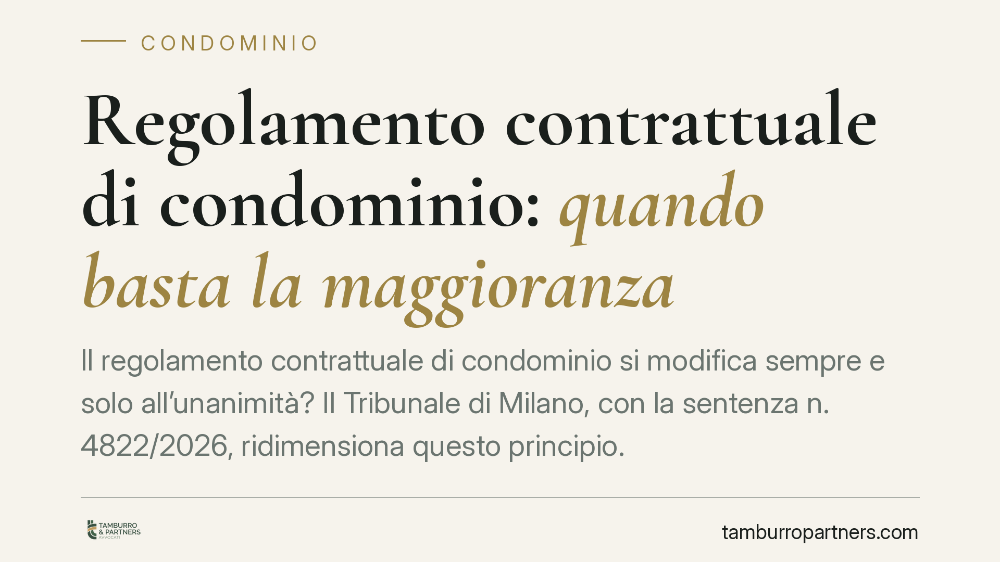
Regolamento contrattuale di condominio: quando basta la maggioranza
Il regolamento contrattuale di condominio si modifica sempre e solo all'unanimità? Il Tribunale di Milano, con la sentenza n. 4822/2026, ridimensiona questo principio. Le clausole …
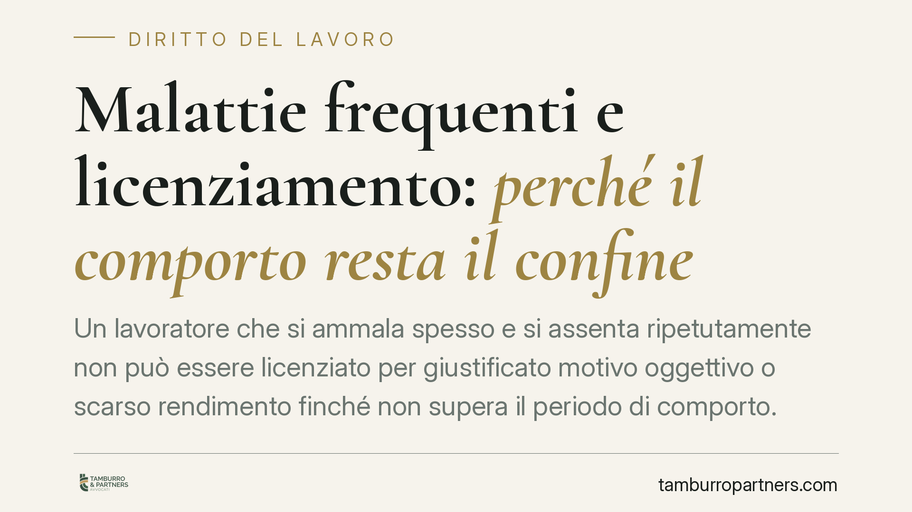
Malattie frequenti e licenziamento: perché il comporto resta il confine
Un lavoratore che si ammala spesso e si assenta ripetutamente non può essere licenziato per giustificato motivo oggettivo o scarso rendimento finché non supera il periodo di compor…
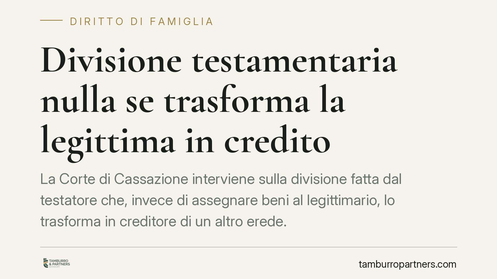
Divisione testamentaria nulla se trasforma la legittima in credito
La Corte di Cassazione interviene sulla divisione fatta dal testatore che, invece di assegnare beni al legittimario, lo trasforma in creditore di un altro erede. Senza il suo conse…
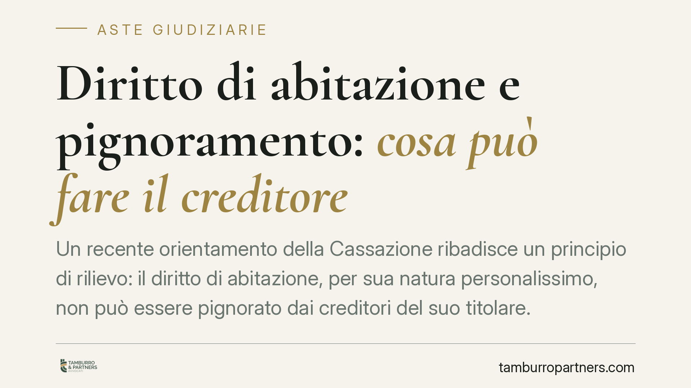
Diritto di abitazione e pignoramento: cosa può fare il creditore
Un recente orientamento della Cassazione ribadisce un principio di rilievo: il diritto di abitazione, per sua natura personalissimo, non può essere pignorato dai creditori del suo …
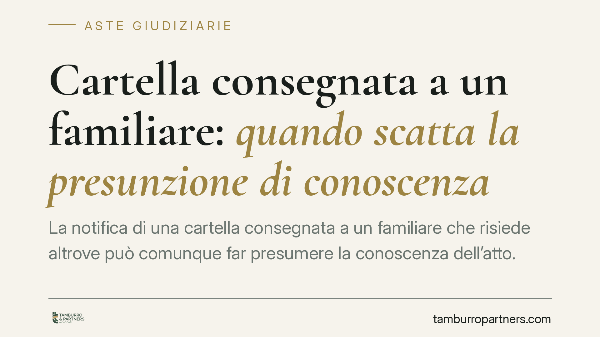
Cartella consegnata a un familiare: quando scatta la presunzione di conoscenza
La notifica di una cartella consegnata a un familiare che risiede altrove può comunque far presumere la conoscenza dell'atto. Secondo la giurisprudenza di legittimità, il certifica…
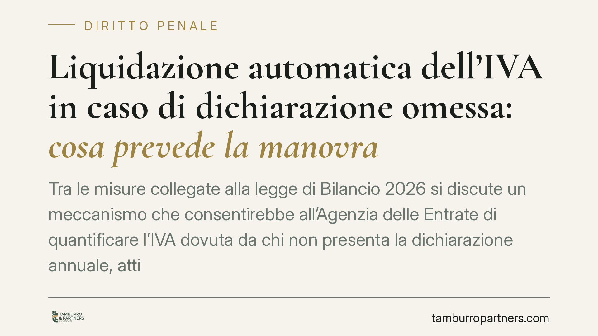
Liquidazione automatica dell'IVA in caso di dichiarazione omessa: cosa prevede la manovra 2026
Tra le misure collegate alla legge di Bilancio 2026 si discute un meccanismo che consentirebbe all'Agenzia delle Entrate di quantificare l'IVA dovuta da chi non presenta la dichiar…
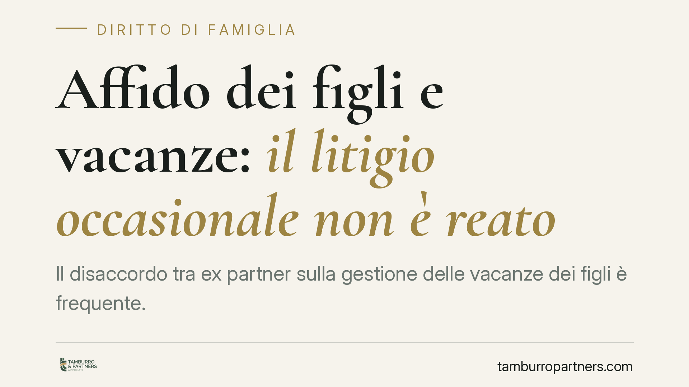
Affido dei figli e vacanze: il litigio occasionale non è reato
Il disaccordo tra ex partner sulla gestione delle vacanze dei figli è frequente. Ma ogni inadempimento alle regole sull'affidamento integra reato? La risposta è no: serve la prova …
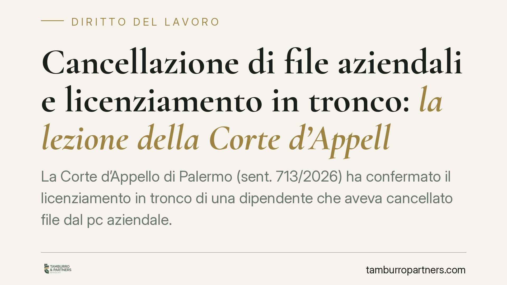
Cancellazione di file aziendali e licenziamento in tronco: la lezione della Corte d'Appello di Palermo
La Corte d'Appello di Palermo (sent. 713/2026) ha confermato il licenziamento in tronco di una dipendente che aveva cancellato file dal pc aziendale. Il punto rilevante: la giusta …
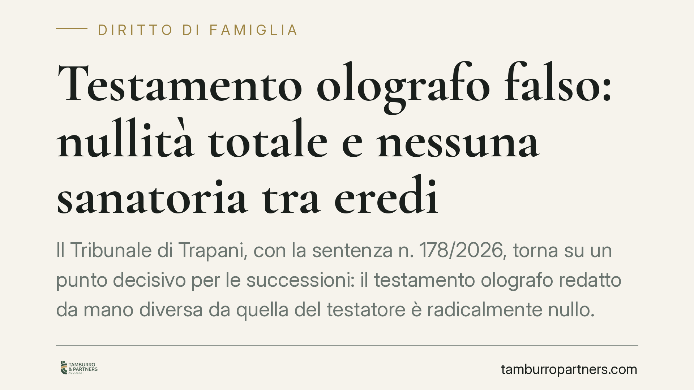
Testamento olografo falso: nullità totale e nessuna sanatoria tra eredi
Il Tribunale di Trapani, con la sentenza n. 178/2026, torna su un punto decisivo per le successioni: il testamento olografo redatto da mano diversa da quella del testatore è radica…
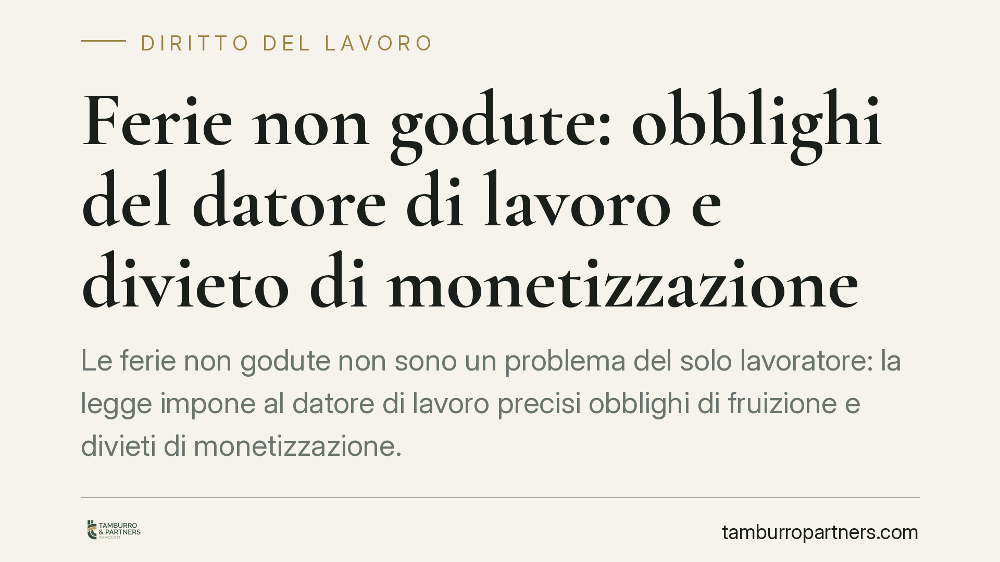
Ferie non godute: obblighi del datore di lavoro e divieto di monetizzazione
Le ferie non godute non sono un problema del solo lavoratore: la legge impone al datore di lavoro precisi obblighi di fruizione e divieti di monetizzazione. Ignorarli espone a sanz…

TFR e contributi non versati al fondo pensione: il privilegio secondo le Sezioni Unite
Quando il datore insolvente non versa al fondo pensione il TFR e le trattenute del lavoratore, quei crediti vanno collocati con privilegio o come semplici crediti chirografari? Le …